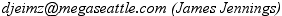

Up to now, there has only been one Loglan. Just Loglan, unqualified. Have you learned much Loglan? Have you actually used it? Occasionally? Ever? Have you ever felt at home in the language?
The trouble has always been that, although Loglan is in principle easy to learn, with its few rules (compared to any natural language) and its consistent grammar, it is nevertheless dauntingly hard to use. JCB maintained that logic and mathematics don’t come naturally to the human mind. It’s like trying to force a rigidly square peg into the wiggly shaped slots that our minds use in sampling the world. Not only that, but when we use Loglan we try to get it exactly right. There are no marks awarded for a near miss. Not so when we are learning a natural language. When you are starting to learn Italian or Inuit, you don’t worry about correct grammar, and your native hearers will generally be delighted that you’ve even tried. Bravo, bravo! Have a slice of walrus!
So perhaps we should approach Loglan in two stages. The top half of the mountain is Power Loglan: that’s Loglan as it is now, as it is described in Loglan One, and as it’s taught in Understanding Loglan.
That’s the Loglan that tolerates no ambiguity, and in which we have to say exactly what we mean, because if we don’t we are likely to be saying something else which we didn’t mean at all. And if we are talking to a computer, that is how we’ll be understood. We aren’t allowed to rely on the intelligence, common sense and contextual knowledge of our hearer.
But what if we were to approach those fierce and icy slopes by a gentle stroll? Along a path through upland meadows, where we can enjoy the larks singing and sniff the scent of the pines? What if we were to abandon the strict criterion of non-ambiguity, and what if, as we do in natural languages, we could rely on our hearer to assume we aren’t saying something totally silly?
What if we were to start by learning Easy Loglan?
Holmes 2024: I am adding remarks and some minor changes reflecting things that have happened in the language since 2013. I do not believe that anything here allows usages not found in standard Loglan: a useful starting subset of the full toolkit of the language is described here.There is no difference in pronunciation between Easy Loglan and Power Loglan. Loglan pronunciation is one area which is unarguably easy. Apart from a few minor variants, which you’ll find are quite natural to your mouth, every letter is pronounced in one and only one way, and there are no sounds that are difficult to produce.
Holmes 2024: review minor changes in pronunciation in our current documents.
In Loglan there are only three kinds of word.
We’ll start with predicates. Loglan doesn’t distinguish between verbs, nouns and adjectives. A particular predicate may in one context be translated into English by a verbal construction, and in another context as a noun or an adjective. This simplifies the grammar enormously, and reduces the amount of vocabulary that you have to learn.
Because a predicate can’t be directly equated with an English adjective, verb or noun, we have to get into the habit very early on of translating a predicate into English not by a single word, but by a short phrase.
For example, the predicate mrenu means is a man. And skitu means sits on. Redro means is redder than. If you don’t specify what something is redder than, then you are simply saying that it’s red. However, if you do want to use the comparative, then there is nothing extra to learn.
The simplest Loglan utterance consists of just a predicate. Mrenu! or Skitu! I’ve added an exclamation mark because this is how we give commands in Loglan. Mrenu! means Be a man! and Skitu! means Sit!, as you might say to your dog.
Here is a list of Loglan commands for you to play with.
Pazda! Wait!
Takna! Talk!
Dargoi! Go away!
Ckano! Be kind!
Tedji! Pay attention!
Jelhaisto! Be happy and healthy!
(That’s the customary Loglan way of ending a letter or email.)
You have probably noticed that the English translations of mrenu and skitu are somehow unfinished. They are not, as are the commands, complete utterances. The commands are a special case: in a command the predicate always applies to the person we are talking to. But when we use a predicate to make a claim, we want to say who or what it applies to. We want to make a statement about something that we can designate. We want to say I am a man or You are sitting on the ground.
To allow us to do that, every predicate has a number of ‘slots’ associated with it. Some have only one slot, a few have as many as five. Two or three slots are common. Into these slots we can put words designating what the predicate applies to. These slots are often referred to as the ‘places’ of a predicate, and the words or expressions used to fill the slots, as ‘arguments’ .
The predicate, mrenu (... is a man ) has only one slot, indicating who is a man. So
Da ga mrenu. He is a man.
Ta ga mrenu. That is a man.
La Djan, ga mrenu. John is a man.
So you see that we can fill the single mrenu slot either with a little word (what in English we’d call a pronoun) or a name. Actually there are other ways to fill the slot, ways of adapting other predicates so as to designate something that we could put in the mrenu slot.
Le ditca ga mrenu. The teacher is a man.
I’ll explain le and la later in Easy Loglan. That little word, ga, serves to separate the designator (in English terms the subject of the sentence) from the predicate. It does not mean is. It’s more like a punctuation mark, actually. We’ll see in the next section why it’s necessary to separate the first place designator from the predicate.
When I started learning Loglan the hardest thing to remember was to use ga in front of the predicate. It’s something I still forget from time to time. I think people will find it easier to drop the redundant ga’s when they come to learn Power Loglan.
The second predicate I introduced, skitu, (... sits on ... ) has two slots. If we are making a statement rather than a command, the first slot has to be filled. The second, and any further slots may or may not be filled. But if any sutori (Loglan for “second or later”) slot is not filled, subsequent slots are left blank too.
Da ga skitu. He sits.
Da ga skitu ta. He sits-on that.
La Djan ga skitu le cersi. John sits-on the chair.
When we use a predicate for a command, the first slot is never filled, but the second may be.
Skitu le cersi! Sit-on the chair!
Skitu la Djan! Sit-on John!
Hompi mi! Drink me!
In the Loglan translation of Alice in Wonderland, the bottle she finds has that on the label. Actually hompi is a 3-slot, or 3-place predicate: ... drink(s)... from.... So Alice’s bottle might have said Hompi ba mi! (Drink something [from] me!) or Hompi ti mi! (Drink this [from] me!) We’ll worry about such distinctions in Power Loglan, but here in Easy Loglan Hompi mi! is just fine; we all understand that one drinks what is in a bottle, not the bottle itself, or the label.
Using the predicate places in Loglan is one of the things that people find difficult about the language. And it is indeed difficult to remember, for every predicate that one knows, what each place is used for. Later in Easy Loglan, I’ll show you a way to get around the place structure. But predicates and their places are such a fundamental feature of Loglan that I felt we should learn to appreciate it early on. It is probably the most elegant and beautiful feature of Loglan. In Easy Loglan, if we get the place structure wrong, our hearer will surely be able to work out what we mean.
In the last section we had
La Djan, ga skitu le cersi. John sits-on the chair.
What kind of a chair is it?
La Djan, ga skitu le groda cersi. ... the big chair
kofcko ... the comfy chair
hardu ... the hard chair
laldo ... the old chair
mi ... the me chair (my chair)
la Djan, ... the John chair (John's)
The last two examples are one way that we handle possessives in Loglan. Mi means I, me, but as a qualifier it means my. So you see, we can use a Name or an appropriate Little Word to signal possession.
The point of all these examples is that, as well as some Little Words, and Names, we can use predicates as qualifiers. In a string of qualifiers, the leftmost one qualifies those to its right. This is like the Adjective-Noun order of English.
Ti ga mutce kofcko cersi. (This is-a-very comfy chair) shows how each qualifier qualifies the predicate to its right, and that combined qualifier then qualifies the next one.
There’s a famous example in Power Loglan, It’s a pretty little girls’ school, which has at least 17 possible meanings. A school for pretty little-girls, or a pretty school, or a rather small school for girls....
The main point here is that the predicate on the left (or in some cases the Little Word) qualifies the word to its right, and that combined meaning qualifies the next predicate in the string.
Da ga mutce kukra sucmi ficlu titci.
He/she/it/they [is a] very-fast-swimming-fish eater: i.e.: Da is an eater of fishes that swim very fast. If you’re having trouble, look at it this way: Da is-an-eater. (We’ve jumped ahead to the end of the predicate string.) What characterizes da’s eating? Fish. What sort of fish? Swimming fish. Fish that swim how? Fast swimming fish. Fish whose fast-swimming-speed is how? Very. That’s looking at it backwards, but you will soon get used to this left-to-right linking. After all, it’s what we do in English, (He eats very fast swimming fish) only not alway so consistently. Again, in Easy Loglan if you stray from the strict order, people will still understand: surely you’re not talking about fast-swimming things that are very-fish-like. If you are, you’ll have to explain, as you would in English. I bet the Loglan explanation will be simpler than the English one !
There is a way to change the grouping. If you wish, for instance, to say Da is a very-fast-swimming fish-eater, i.e. a fish-eater who swims very fast. This is done by using the little word ci, which acts as a kind of hyphen, giving Da ga mutce kukra sucmi ficlu ci titci. Ci ties the two predicates that it occurs between into a single unit (fish-eater), and mutce kukra sucmi qualifies that.
Each section of an Easy Loglan tutorial will present the vocabulary used in that section.
groda (... is bigger than ... by... (amount))
hardu (... is harder, more resistant to scratching than...)
kofcko (... happens to make comfortable ... in/about/with...)
laldo (... is older than ... by... (amount))
mutce (... is more extreme than... in quality...)
kukra (... is faster than... by (amount)... in motion...)
sucmi (... swim(s) to ...from ... via ... )
ficlu (... is a fish)
titci (... eats...)
It’s time to get to grips with those Little Words. In sections 1 and 2 you’v e encountered some of them:
da he or she or it or they or him or her or them.
ta that
ti this
mi I, me, my...
The slots of predicates are filled by designations, words that identify what the predicate applies to.
To put a Name into a designator slot, la is used. Without the la, a Name is a call, rather like a command. Djan! means John! But logli usually say Hoi Djan! (Oh John!) which makes it quite clear we are calling him. La Djan designates John, for use in a predicate slot. German speakers will feel quite at home with this usage.
So Djan, skitu! means John, sit! whereas La Djan, ga skitu. means John sits.
Le is used to make a designation out of a predicate. More on that later.
You’ll have noticed that da can be translated in any number of way; masculine, feminine, neuter, singular, plural. How do we keep all those possibilities apart? The answer is that da refers to the last person or thing that we mentioned. In Easy Loglan we shan’t use many of them, but if we have mentioned a number of items, we can use also de, di, do, du to refer to them individually. I don’t think Easy Loglanists are ever likely to use more than two, da and de. Your hearer can sort out which you mean—or as we’ll see later—you can use an explanatory sentence to keep things straight.
There’s a similar set, ba, be, bo, bu which mean something, so that we can, in the same sentence, refer to four different somethings. The da series refers to things we can identify, and the ba series to things we as yet can’t. Again, we shan’t need them all. Easy Loglanists will probably use only ba and be. You should just note that bi which exists in Power Loglan has a quite different function. For now, just remember ba and be. Something, and something else.
Ti is this. Ta is that. Designating something that is relatively near to you, or farther away.
Ti ga mrenu. This is-a-man.
Ta ga fumna. That is-a-woman.
Loglan uses the same vowels in the words for here and there.
Here is vi.
There is va
so you see, it’s like ti and ta. This series has an additional member:
Yonder is vu. (ie: a long way away.)
More exactly, vi means in the same place as. So it serves also as a translation of in, on, at. Similarly va means in a place not far from. And vu means in a place distant from. So vi, va, vu can also play a prepositional role. Vi le cersi on/at the chair. Va le cersi somewhere near the chair. Vu le cersi somewhere far from the chair.
I, me mi
you tu (singular or plural, it doesn’t matter.)
she, he, it da, de,. ..
we, us mu
they—,them da, de,...
You notice that Loglan makes no distinction between singular and plural. In the ordinary course of events we don’t need to: you know what I’m talking about. In special circumstances we can make the distinction, using the number words and the vague numbers. We’ll look at that in the next section.
I think you’ll agree that Loglan has a pretty simple way of expressing statements about space.
Vi le cersi. In, on, at, the chair. Close to it.
Va le cersi. Away from the chair. Maybe in the same room.
Vu le cersi. Far from the chair. In the next street, Japan, or Alpha Centauri.
Statements about time are equally simple.
That word ga, which I emphasized, does not mean is, has a couple of siblings. Three in fact, and like vi, va, vu, they can serve either an adverbial or a prepositional role. Here they are as adverbs,
pa earlier
na now
fa later
These are how we make explicit past, present and future statements. Ga is neutral as to tense: we use it to make general statements. La Djan, ga hompi, John drinks, as opposed to La Djan, na hompi, John is drinking now.
La Djan, pa skitu le kofcko cersi. John earlier sat on the comfy chair.
Mi fa skitu letu cersi. I later (=will) sit-on your [the-you] chair.
That’s an easy set to remember:
pa past, previously, did
fa future, later, will
na now, present, is
These time particles, like vi, va, and vu, can be used in a prepositional role: Pa le hapvei before the party. Na le hapvei at the same time as the party. Fa le hapvei after the party.
Note that, gramatically, pa, na, and fa do exactly the same job as ga did. They come between the designator (“subject”) and the predicate (“verb”). But whereas ga is simply a separator, pa, na, and fa also give a time indication to the predicate. In fact, vi, va, and vu, can also be used in this way. When you use one of these time or space particles (and others we shall meet later) the ga is omitted.
So why do we need ga, which doesn’t seem to do anything?
Think back to what we were saying about qualifiers. Look at the sentence Le laldo ditca ga klimao le cirpai. (The old teacher explains the lesson.)
If we wrote Le laldo ditca klimao le cirpai. what we’d be saying is The old-teacherly explanation and we don’t actually have a predicate there to make sense of the sentence, so the lesson is sort of hanging in a void. That wouldn’t parse.
In Le laldo ditca ga klimao..., the ga closes the predicate string that we’ve used to designate what’s in the first place of klimao, so we know that the predicate that follows, in this case klimao, is the main predicate of the sentence.
Here are some examples using time and space particles (and a couple of other useful ones) instead of ga-
Mi vi skitu. I here sit.
Le mrenu va pazda. The man there waits.
Ti kou kofcko. This for-some-cause is-comfortable.
(i.e.: There a reason that it’s comfy. Perhaps it’s filled with goose down.)
Ba vu denro mi. Something over-yonder is-dangerous-to me.
Da duo skitu. He/she/it/they by-some-method sits.
(Perhaps it’s a medieval knight in armour, and can only sit by using a crane.)
These little words can also qualify the predicate in a sentence, or they can qualify one of the designators that fill the predicate’s places. They behave very like English adverbs and prepositions. We’ll meet more of them later.
Da duo ne mekleo ridle. He by-means-of one pair-of-spectacles reads.
Mu skitu vi le kruma. We sit in the room.
Mi pa brana vu la Loglandias. I was born a long way from Loglandia.
Levi cersi ga kofcko. This (the-here) chair is-com fy.
Lepa denro na fiacko tu. The-past dangerous-thing now scares you.
Note that it’s customary to write le with pa/na/fa/vi/etc/mi/etc as one word.
The numbers are something that one needs to learn very early on in one’s study of any language. Fortunately the Loglan numbers are extremely easy to remember.
| ni | 0 | ne | 1 |
| to | 2 | te | 3 |
| fo | 4 | fe | 5 |
| so | 6 | se | 7 |
| vo | 8 | ve | 9 |
For the compound numbers we speak the digits in sequence, and we write them as one word. So ten is neni (one-zero) and eleven is nene (one-one). In the same way, twenty three is tote.
When we get to the bigger numbers we use the suffixes -ma hundred and -moa thousand, [Holmes 2024: moa not mo in post 2013 Loglan] so one hundred is nema, and two thousand is tomoa. Bigger units are made by aggregation: five million is femoamoa. Nemoa sia. A thousand thanks.
There is no indefinite article in Loglan, so we use one. Ne mrenu actually means precisely one man, but that’s near enough what you need, if you want to say A man went. Ne mrenu pa godzi. If you wanted to be more vague you could say Ba pa godzi. Someone/thing went.
Holmes 2024: I don't quite get this. There are indefinite articles in Loglan, and Su mrenu pa godzi is quite precisely "a man went" (at least one man went).
The numbers are precise.
Ne mrenu pa godzi. Exactly one man went.
Fe ditca ga hijra, Exactly five teachers are here.
There are, too, a set of “vague quantities”, translating all, many, enough, a few/little, at least, about, etc. These are the r- and s- sets.
| ra all | sa almost, approximately |
| re most, more than half | (se six) |
| ri a few | si at most |
| ro many | (so seven ) |
| ru enough of | su at least |
So sanema means about a hundred, and sineni means not more than ten.
As well as the r- and s- sets, there are a couple of suffixes that are used with numbers.
-ri forms ordinals. Le neri bukcu, the first book.
-ro is used for a comparative series. This is especially important as the way that Loglan forms superlatives. Le nero gudbi kruma, the best room. Le raro kukra sucmi ficlu, the least (“allth" i.e. last in comparative order) quickly swimming fish, the slowest fish.
Le cersi, as we’ve seen in unit 3, means the chair. Le with a predicate makes a designation out of it. It works just the same with a string of predicates: le kofcko cersi, the comfortable chair.
Similarly la with a name makes a designation. [Without the la, a bare name is a call.] Holmes 2024: a bare name cannot be used as a vocative in post-2013 Loglan. This actually caused endless phonetic problems which the older computer parsers couldn't detect. The vocative marker hoi must always be used, and I am putting it into the examples.
Hoi Djan, helba mi! John, help me ! [Holmes 2024: note that this was changed]
La Djan, ga helba mi. John helps me.
It’s important to pause after you use a name. Only names end in a consonant. All predicates and little words end in a vowel. You pause after a name so that your hearer can tell it’s a name. That’s why I’ve put a comma in these examples. You have to write a comma after each name in Loglan [Holmes 2024: the parser now absolutely requires this; in earlier versions it was encouraged but not mandatory]
Predicates always end in a vowel, and they always contain two adjacent consonants. There are just over a thousand “primitive” predicates, and these all consist of two syllables. The two consonants may occur at the beginning, like mrenu, or between the syllables, like cersi. Of course, a thousand some words is nowhere near enough to carry the whole meat of meaning. So most predicates are “complexes”: they are formed from two or more primitive predicates each of which contributes an abbreviated form (known as an “affix”) to the complex. Kofcko is a complex. It is formed from komfu → kof (... is comfortable in circumstances ...), and ckozu → cko (... causes... under conditions ... ). This is used in cases of non-intentional or non-human causation. Madzo → mao (... make... out of...) deals with intentional causation, so kofmao (... make ... comfortable ) is used when you are intentionally making someone comfortable, either physically or mentally. In the latter case kofmao could be translated as comfort/console/reassure/solace.
Another common affix is cenja → cea (... become/change into ... from ... ). This is used in situations where no cause is specified. For example morcea, (... die). The mor affix comes from morto (... is dead). So morcea simply states the fact of something dying. We also have morcko, where something kills someone, but there is no intention involved. Le fagro pa morcko da, The fire killed him. Mormao is used in a case of intentional killing: La Djan, pa mormao le ditca, John killed the teacher.
Jelhaisto, which you met in section one, is made from djela → jel (... is healthier than ... ), hapci → hai (... is happy about... ), and stolo → sto (... remain/stay at...). So what jelhaisto means is (... stays happy and healthy ) and it’s most commonly used as a command.
Once you know the primitive predicates, you can make an educated guess at the meaning of a complex that you have not encountered before—perhaps because the person using it has just made it up! This is one of the joys of Loglan: although the dictionary now contains some ten thousand words, we are always coming across ideas that require a new word. Finding an original metaphor that fits the idea perfectly is a very satisfying achievement. In time the language is likely to be richer in vocabulary than any natural language, as logli make finer and finer distinctions to express the subtleties of thought.
Little words also end in a vowel. They never contain more than one consonant in succession. The forms that little word syllables can take are limited to v, vv, cv and cvv, where v stands for “vowel” and c for “consonant”. When two or more little words are used together, we usually give each of them a neutral stress [Holmes 2024: stresses in little words were always allowed but optional: there is a special rule that you must pause after a finally stressed little word before a predicate; none of this is new]. For instance lemi, my ..., letu, your..., lena, the present... .
Le can be used with many little words. For instance, the number words. Le to mrenu means the two men. And To le mrenu means two of the men. To le neni mrenu means two of the ten men. That’s pretty straightforward. Practise your numbers in these expressions, using different predicates: cersi, ditca, cirpai, fumna (... is a woman ), tobme (... is a table ), hompi (... drink... from ...).
Does the idea of saying Te le hompi puzzle you? It needn’t. Any of the predicates that we normally translate as verbs can also signify any person or thing doing the action. So le hompi means the drinker, and te le hompi is three of the drinkers . Similarly for ditca. We met this word as meaning teacher, but its full definition is ... teach/instruct subject ... to ... . Sucmi means ... swim to ... from ... via ..., so Ra le sucmi means all the swimmers. It will seem odd for a while, but your mind will soon start to think in a more loglandical way, and expressions like these will seem perfectly natural.
There is a category of very useful Loglan little words which tell the hearer how the speaker feels about what da is saying. (Da is such a useful way of avoiding that clumsy “he or she” that logli often use it in English.) These are known as attitudinals. They do not affect the truth value of a claim, but express the speaker’s attitude to what da is saying.
All these attitudinals are vv in form, and the initial letter determines which of five families the word belongs to. The first family is four words beginning with a-, which all have something to do with the intentions of the speaker.
ai intention
Ai mi sucmi I intend to swim.
ao desire
Ao tu ditca l a Loglan, mi. I want you to teach Loglan to me.
ae hope
Ae tu jelhaisto. I hope you stay well and happy.
au don’t care
Le tu cersi au ga kofcko. I don’t care if your chair is comfortable.
The second family consists of five words beginning with u-. They are often used alone, as a one-word utterance, although they can also be embedded somewhere in a sentence. These most directly express the speaker’s feelings.
ua satisfaction.
Think of French voila . Ah, there we are!
ue surprise,
ui pleasure
uo annoyance
uu sorrow, regret
These are pronounced |wa|, |weh|, |wee|, |woh|, |woo|.
There are four attitudinals beginning with e-.
ea suggestion, proposal
Ea mu godzi. Let’s go.
eu supposition
Eu tu logli. Suppose you were a Loglander.
eo please
Eo hompi! Please drink!
ei question
Ei tu logli? Are you a Loglander?
Ei is used to elicit a yes/no response. There are several other interrogative little words which we’ll meet later.
The i-initial attitudinals deal with degrees of certainty and doubt.
ia certainty.
Ia. Mi ia logli. Yes. I’m certainly a Loglander.
io probable
Levi cersi io kofcko. This chair is probably comfortable.
ii possible
Leva fumna ii mrenu. That woman might be a man.
iu unknown
Ei leva fumna ga mrenu? —Iu. Is that woman a man? — I dunno.
ie which?
Ie fumna ga mrenu? Which woman is a man ?
Ie le te fumna ga mrenu? Which of— the three women is a man?
The last four examples hark back to Loglan One, page 183, where JCB explains that le actually means the thing that I’m thinking of which appears to be a.... The example he uses is of two detectives who have arrested what they had assumed was a woman. Later, one says to the other Le fumna ga mrenu. In other words, the detectives had thought the suspect was a woman, but closer examination revealed that da was a man.
In Power Loglan, this leads into some interesting logical considerations. In Easy Loglan we don’t need to worry about that; however the example reveals something about how we actually use the word the in English. Loglan can actually help us understand English better. Ui!
The last family of attitudinals is o-initial, and deals with degrees of moral compulsion and permission.
oa compulsion
Oa mi cirna la Loglan. I must learn Loglan.
oe duty
Oe mi no hompi ti. I ought not to drink this.
oi permitted
Ia tu oi hompi ta. Certainly you may drink that.
ou indifference
Ou tu hompi ta. It doesn’ t matter if you drink that.
Negatives are very easy in Loglan. No! by itself means No!.
Ei tu logli? —No. Are you a Loglanist? —No.
Embedded in a sentence, it means not.
No hompi ta! Don't drink that!
Uu mi no saadja la Loglan. Unfortunately I don’t understand Loglan.
(Pronounce saadja as /sa-AH-dja/) It is a complex formed from sanpa → saa (...is a sign of ...to... prompting behavior... in situation ...) and djano → dja (... know that... about...). So saadja means ... understand/know the meaning of sign ... . In a later section we’ll go through all the predicates we’ve introduced so far, and give you typical sentences using them, which will serve to fix the place structure in your mind. Furthermore, as I mentioned earlier, I’ll show you an easy way to rearrange the places to fit what you want to say.
No usually qualifies the word that follows it.
Mi no pa hompi ta. I didn’t drink that. (Neutral.)
Mi pa no hompi ta. I didn’t drink that. (But maybe I sniffed it.)
No mi pa hompi ta. I didn’t drink that. (But someone else did.)
Mi pa hompi no ta. I didn’t drink that. (But I may have drunk something else.)
In the special case where No is the first word in the sentence, followed by a brief pause, it acts as a general negation, negating the whole sentence.
No, mi pa hompi ta. It is not the case that I drank that.
That’s logicians’ talk, but it makes it clear that the whole sentence is negated.
Power Loglan has an extensive set of what are called ‘Logical Connectives’, which is one of the areas that people often find difficult. Our minds are just not the right shape to absorb logical concepts. So here in Easy Loglan we’ll present only what fits our wiggly mind-holes.
And is simple enough. John and Mary. Both together. In Loglan, La Djan, e la Meris. Le ditca, e le sucmi. The teacher and the swimmer. He loves and respects her is Da cluva, e rispe de. Do please notice those commas: you need to make a brief pause before all these connectives.
Now let’s look at or. The logician’s or is not quite the same as our most usual English or. The logician’s A or B actually means A or B or both. That’s known as an inclusive or, whereas our normal A or B is usually taken to mean Either A or B, but not both, an exclusive or. In Easy Loglan or is a. La Djan, a la Meris, John or Mary (or perhaps both). Da titci, a klipu le grato, He eats, or keeps the cake.
In section 5 we met lemi, my, and letu, your. Leda means his/her/its/their. Other possessives use the little word pe. If you speak French, Italian or Spanish this way of expressing possession will be quite familiar.
Tu na skitu le cersi pe le ditca.
You are sitting-on the chair of the teacher.
The word pe actually indicates any kind of connection, not just possession. For instance, Le kapta pe le grobou, the captain of the ship.
As we saw in section 6, ei makes a sentence into a question. The kind of question that ei makes requires a Yes/No answer.
What if we want an answer that gives us more information than that? Who are you? What’s this? What’s it like? How many are there?
In these cases we use the little words hu, he, ho and ie.
Which you use depends on the kind of answer you are expecting. When the answer is going to be a designator, we use hu.
Hu fa godzi? —La Djan. Who will go? —John.
Hu ga namci tu? —Liu Djan, ga namci mi.
What names you? (What is your name?) —The-word “John" names me. (My name is John.)
Note the little word liu. This, like la and le, is a word that forms a designation. In this case it is like putting a single word in quotes, as we do when we are talking about the word, rather than using it. Power Loglan has several other kinds of designator. In Easy Loglan we shan’t need them, but it’s comforting to know that they all begin with the letter l.
When the answer is going to be a predicate, we use he.
Ti ga he? —Ti ga cersi. This is what? —This is a chair.
Ti ga he cersi? —Ti ga kofcko cersi.
This is what-kind-of chair? —This is-a comfortable chair.
When the answer is going to be a number, we use ho.
Ho le mrenu pa kamla? —Fo.
How-many-of the men came? —Four.
Hoba tugle ne mrenu? —Toba.
How-many-somethings be-leg one man? —Two-somethings.
The last example is very loglandical. Tugle is a predicate meaning... is a leg of... . So Toba tugle ne mrenu. means Two somethings are-a-leg-ofone man. (One man has two legs.)
When the answer is going to pick one of a range of possibilities, we use ie.
Ie le cersi ga kofcko? —Le groda.
Which of the chairs is comfy? — The big one.
Hu allows us to ask when? where? how? why?
na hu? when? (at the same time as what?)
vi hu? where? (in the same place as what?)
duo hu? how? (by doing what?)
kou hu? why? (caused by what?)
Sentences about giving somebody something are tricky in English. We usually understand because Daddy gave Jane a puppy makes sense if the gift was a puppy and the recipient was Jane. But consider Where did you get it? —Daddy gave it me. Here the gift and the recipient are in reverse order compared to the first sentence. We still know which makes sense.
In Loglan the place structure of donsu is (... give gift... to recipient... ). But I have to admit that because of the English tendency to reverse the order of the second and third places, logli often have difficulty remembering the canonical structure. There are a number of other actions that involve a similar structure: sending, offering, bringing, etc.
If we come up against a situation where we can’t remember the structure and we need to make sure we are correctly understood, there are several little words (called Case Tags) that we can use.
La Far, pa donsu beu ne kangi dio la Djein.
Daddy gave a puppy to Jane.
But with beu and dio we can change the order:
La Far, pa donsu dio la Djein, beu ne kangi.
Daddy gave to Jane a puppy.
beu indicates something which passively undergoes some process. Here it’s the gift,
dio indicates a destination or receiver. (Think of the word ‘direction’)
sau indicates a source, reason or cause.
Notice the predicate kangi (... is a puppy ). As a general rule, no two predicates are distinguished only by the final vowel. However there are two exceptions to this rule, the so-called animal and national declensions.
kangu (... is a dog) This is the most general term.
kango (... is a male dog)
kanga (... is a female dog)
kangi (... is a puppy/infant dog)
kange (... is more canine/dog-like than ...)
As well as the predicates for specific animals, katmu, hormu, kasnu (cat, horse, cow) these endings are applied also to humnu (... is a human being), ficlu (... is a fish) and nirdu (... is a bird)
The national declension gives a similar set of related meanings to all the predicates expressing nationality.
logli (... is a Loglandian person, a Loglander)
logla (... is an element/feature/expression of the Loglan language)
loglo (... is an element/feature/expression of Loglandian culture)
logle (... is a Loglandian place/territory, a region inhabited by Loglanders)
The same endings are applied to all the other nationality words, such as merki (American), gleci (English), frasi (French), ruski (Russian), spani (Spanish), talni (Italian), etc.
Much of the difficulty of Power Loglan arises because the language covers all the options. Easy Loglan removes most of these options. The tutorial and practice material of Easy Loglan will school the learner to use short, simple sentences. Consequently da will have fewer decisions to make than has da’s colleague de, who is learning Power Loglan from scratch. One learns a language by using it, by actually producing utterances. With fewer decisions, da will be able more rapidly to produce Loglan utterances, and should consequently learn faster, much faster than de, who will be spending most of de’s time working out which construction to use or how to terminate a clause. A fascinating intellectual challenge, but not a way to become fluent. With fluency one becomes able to use the new language directly, rather than by translating from one’s home language.
In time, I hope we shall have a progressive and integrated Loglan course, first introducing Easy Loglan, with ample reading and practice materials. Then bit by bit presenting the features of Power Loglan which Easy Loglan lacks: the student should thus greet each new addition with a feeling of “Aha, that’s jolly useful. Now I see how to say something more clearly and elegantly.” Thus da incorporates the new feature into da’s background of fluency, not seeing it as a difficulty but as an extension of the scope of what da is able to express.
Please discuss Easy Loglan and let us know your thoughts. When we arrive at a stable description I’ll devote an entire issue of La Logli to reading and practice materials in Easy Loglan.
Holmes 2024: final remarks -- I really don't think this allows anything which is forbidden in standard Loglan. It's a useful introductory subset of the language. Please note where I have made minor changes. The most important one that was necessary is that one cannot use a bare name as a vocative (a call): one has to use the vocative particle hoi, which was already present in Loglan before 2013. There are profound phonetic reasons (part of Power Loglan, not Easy Loglan) why this change had to be madeI also think there are some significant things missing here which should be in Easy Loglan: the use of letters as pronouns is more easy and natural than the use of the da series. I have not checked vocabulary; there might have been changes in the meanings of some of the words used. Do also notice that the suffix for a thousand is moa not mo; the latter syllable had too many other uses.
Copyright © 2000, 2024 by The Loglan Institute, Inc. All rights reserved.
Send comments and corrections to: 